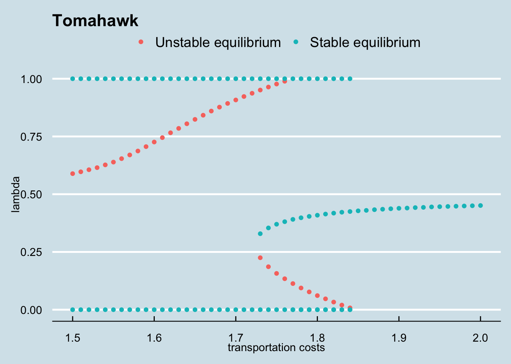
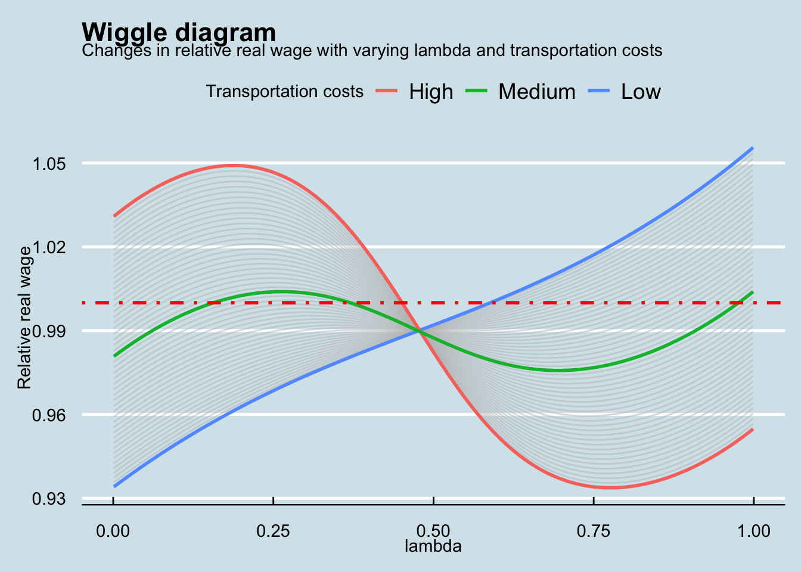

################################################################
# Read in libraries
################################################################
library(nleqslv) # for solving system of nonlinear equations
library(ggplot2) # for structurally making plots
library(ggthemes) # for using economist theme
library(dplyr) # for data wrangling
library(cowplot) # for combining plotsNew economic geography model with R
Introduction
Why some regions have more economic activiy than others depend on a variety of factors, including regions’ endowments, good policy and just sheer luck (oftentimes called path dependency). In the 1990s Paul Krugman constructed a model, the Core-Periphery model, that was able to model all these three elements. This model received quite some positive criticism (including a Nobel price), but still is rather complex in wielding it. In this post I show how one can actually program and depict the short term and long term equilibria that the model yields. The derived estimations are coming from Henri de Groot.
One of the reason why this model is complex is that it can easility multiple equilibria like the figure below. Our goal in to prodcude the “Tomahawk” below.

The actual code
We first need to read in some packages that we will use:
Then we define some constants. Note that you can change them if you need a different set-up.
################################################################
# Define parameters
################################################################
L <- 2.0 # Total labor force
phi1 <- 0.48 # fraction of food works living in region 1
gam <- 0.3 # fraction that works in manufacturing
eps <- 5.0 # elasticity of demand
rho <- 0.8 # substitution parameter of variety
bet <- 0.8 # variable costs
alp <- 0.08 # fixed costs
delta <- 0.4 # budget share manufacturingMoreover, we need some additional (none structural) constants, needed for the iteration and the granularity of our plots:
################################################################
# Define iterations and stepsize for transporation and lambda
################################################################
iter_l <- 999
step_l <- 0.001
start_l <- 0.001
iter_t <- 51
start_t <- 1.5
step_t <- 0.01The model containts 6 non-linear equations, namely:
\[\begin{aligned} Y_1 &= \phi_1(1-\gamma)L + \lambda_1 \gamma LW_1\\\\\\ Y_2 &= \phi_2(1-\gamma)L + (1-\lambda_1) \gamma LW_2\\\\\\ W_1 &= \rho \beta^{-\rho}\left(\frac{\delta}{\alpha(\epsilon-1)}\right)^{1/\epsilon} \left(Y_1 I_1^{\epsilon-1} + T^{1-\epsilon}Y_2 I_2^{\epsilon-1}\right)^{1/\epsilon}\\\\\\ W_2 &= \rho \beta^{-\rho}\left(\frac{\delta}{\alpha(\epsilon-1)}\right)^{1/\epsilon} \left(T^{1-\epsilon}Y_1 I_1^{\epsilon-1} + Y_2 I_2^{\epsilon-1}\right)^{1/\epsilon}\\\\\\ I_1 &= \left(\frac{\gamma L}{\alpha \epsilon} \right)^{1/(1-\epsilon)}\left(\frac{\beta}{\rho}\right) \left(\lambda W_1^{1-\epsilon} + (1-\lambda)T^{1-\epsilon} W_2^{1-\epsilon}\right)^{1/(1-\epsilon)}\\\\\\ I_2 &= \left(\frac{\gamma L}{\alpha \epsilon} \right)^{1/(1-\epsilon)}\left(\frac{\beta}{\rho}\right) \left(\lambda T^{1-\epsilon} W_1^{1-\epsilon} + (1-\lambda) W_2^{1-\epsilon}\right)^{1/(1-\epsilon)}\\\\\\ \end{aligned}\]The first two equations denote total regional income for regional 1 and 2, equation 3 and 4 give the regional wages for both regions and the last two equations determine regional price indices.
Thus, the key optimalisation procedure looks as follows:
################################################################
# Definite optimal function
################################################################
equilibrium <- function(x){
Y1 <- x[1]
Y2 <- x[2]
W1 <- x[3]
W2 <- x[4]
I1 <- x[5]
I2 <- x[6]
y <- rep(NA, length(x))
y[1] <- Y1-phi1*(1-gam)*L-lam*gam*L*W1
y[2] <- Y2-(1-phi1)*(1-gam)*L-(1-lam)*gam*L*W2
y[3] <- W1-rho*bet^(-rho)*(delta/(alp*(eps-1)))^(1/eps)*(Y1*I1^(eps-1)+T^(1-eps)*Y2*I2^(eps-1))^(1/eps)
y[4] <- W2-rho*bet^(-rho)*(delta/(alp*(eps-1)))^(1/eps)*(T^(1-eps)*Y1*I1^(eps-1)+Y2*I2^(eps-1))^(1/eps)
y[5] <- I1-(gam*L/(alp*eps))^(1/(1-eps))*(bet/rho)*(lam*W1^(1-eps)+(1-lam)*T^(1-eps)*W2^(1-eps))^(1/(1-eps))
y[6] <- I2-(gam*L/(alp*eps))^(1/(1-eps))*(bet/rho)*(lam*T^(1-eps)*W1^(1-eps)+(1-lam)*W2^(1-eps))^(1/(1-eps))
return(y)
}And finally we need the loop below to create the figures
################################################################
# Create the vector where the output is stored
# This is faster than using append
# we will only append the equilibrium dataframe to find the
# stable and unstable equiliria (do that in the slower (outer)
# loop)
################################################################
rel <- vector(length = iter_l*iter_t)
lambda <- vector(length = iter_l*iter_t)
transport <- vector(length = iter_l*iter_t)
welfare <- vector(length = iter_l*iter_t)
w_man_h <- vector(length = iter_l*iter_t)
w_man_f <- vector(length = iter_l*iter_t)
w_farm_h <- vector(length = iter_l*iter_t)
w_farm_f <- vector(length = iter_l*iter_t)
################################################################
# Set the double loop for the optimal solution using the
# package nleqslv.
# The fast (inner) loop is over gamma, The slow (outer) loop is
# over the transportation costs
################################################################
# Completely parameterized
loop_transport <- seq( start_t, start_t + iter_t * step_t - step_t, by = step_t)
loop_gamma <- seq( start_l, start_l + iter_l * step_l - step_l, by = step_l )
equilibria <- data.frame(T = numeric(0), gamma = numeric(0), stable = numeric(0))
# Create intial starting values
start <- c(1,1,1,1,1,1)
iteration <- 0 # General counter
for (T in loop_transport){
iter_eq <- 0 # Counter to find the equilibria for lambda
lam_vec <- vector(length = iter_l) # initialize lambda vector
t_vec <- vector(length = iter_l) # initialize transport vector
rel_vec <- vector(length = iter_l) # initialize relative real wage diff vector
for (lam in loop_gamma){
iteration <- iteration + 1
iter_eq <- iter_eq + 1
opt <- nleqslv(start, equilibrium)
Y1 <- opt$x[1]
Y2 <- opt$x[2]
W1 <- opt$x[3]
W2 <- opt$x[4]
I1 <- opt$x[5]
I2 <- opt$x[6]
# Fill the various vectors
rel[iteration] <- (W1/I1^delta)/(W2/I2^delta)
welfare[iteration] <- Y1/(I1^delta)+Y2/(I2^delta)
w_man_h[iteration] <- W1/I1^delta
w_man_f[iteration] <- W2/I2^delta
w_farm_h[iteration] <- 1/I1^delta
w_farm_f[iteration] <- 1/I2^delta
lambda[iteration] <- lam
transport[iteration] <- T
# Needed to find the equilibria (a bit redundant but more readible so)
lam_vec[iter_eq] <- lam
t_vec[iter_eq] <- T
rel_vec[iter_eq] <- (W1/I1^delta)/(W2/I2^delta)
}
eq <- data.frame(t_vec, lam_vec, rel_vec)
eq <- eq %>%
mutate(
dpos = ifelse( ( (rel_vec - 1) >= 0 & ( lag(rel_vec) - 1) < 0), 1, 0 ),
dneg = ifelse( ( (rel_vec - 1) <= 0 & ( lag(rel_vec) - 1) > 0), 1, 0 )
)
stable <- eq %>%
filter(dneg == 1) %>%
mutate(stable =1) %>%
select(-dpos)
unstable <- eq %>%
filter(dpos == 1) %>%
mutate(stable =0) %>%
select(-dneg)
if (nrow(stable) > 0 ) {
equilibria <- rbind(equilibria, data.frame(stable[1], stable[2], stable[5]))
}
if (nrow(unstable) > 0) {
equilibria <- rbind(equilibria, data.frame(unstable[1], unstable[2], unstable[5]))
}
if (nrow(unstable) == 1){
equilibria <- rbind(equilibria, c(unstable[1,1], 0, 1))
equilibria <- rbind(equilibria, c(unstable[1,1], 1, 1))
}
if ( (nrow(unstable) == 1) & (nrow(stable) == 1) ) {
if (stable$lam_vec[1] > unstable$lam_vec[1] ){
equilibria <- rbind(equilibria, c(unstable[1,1], 0, 1))
}
if (stable$lam_vec[1] < unstable$lam_vec[1] ){
equilibria <- rbind(equilibria, c(unstable[1,1], 1, 1))
}
}
if ((nrow(unstable) + nrow(stable)) == 3) {
equilibria <- rbind(equilibria, c(unstable[1,1], 1, 1))
equilibria <- rbind(equilibria, c(unstable[1,1], 0, 1))
}
}
################################################################
# Create the dataframe called neg_data
################################################################
neg_data <- data.frame(transport, lambda, rel, welfare,
w_man_h, w_man_f, w_farm_h, w_farm_f)
################################################################
# For creating the plots
################################################################
#Indicate which lines should be highlighted
top_line <- neg_data[neg_data$transport == "1.5", ]
bottom_line <- neg_data[neg_data$transport == "2", ]
mid_line <- neg_data[neg_data$transport == "1.75", ]So we can get our wiggle and tomahawk picture we want:
ggplot(neg_data) + aes(lambda, rel, group = transport) + geom_line(size = 0.5, colour="grey", alpha = 0.5) +
geom_line(data = top_line, aes(x = lambda, y = rel, group = transport, colour = "steelblue"), size = 1) +
geom_line(data = bottom_line, aes(x = lambda, y = rel, group = transport, colour = "black"), size = 1) +
geom_line(data = mid_line, aes(x = lambda, y = rel, group = transport, colour = "red"), size = 1) +
scale_colour_discrete(name = "Transportation costs", labels = c("High", "Medium", "Low")) +
geom_hline(yintercept = 1, size = 1, colour = "red", linetype = 4) +
theme_economist() +
labs(title ="Wiggle diagram", y = "Relative real wage",
subtitle = "Changes in relative real wage with varying lambda and transportation costs")
ggplot(equilibria) + aes(t_vec, lam_vec) +
geom_point(aes(colour = factor(stable))) +
theme_economist() +
theme(legend.title=element_blank()) +
scale_colour_discrete(breaks = c("0", "1"), labels=c("Unstable equilibrium", "Stable equilibrium")) +
labs(title ="Tomahawk", y = "lambda", x = "transportation costs")
Citation
For attribution, please cite this work as:
Graaff, Thomas de. 2018. “New Economic Geography Model with
R.” February 4, 2018. http://thomasdegraaff.nl//posts/post/new_economic_geography.